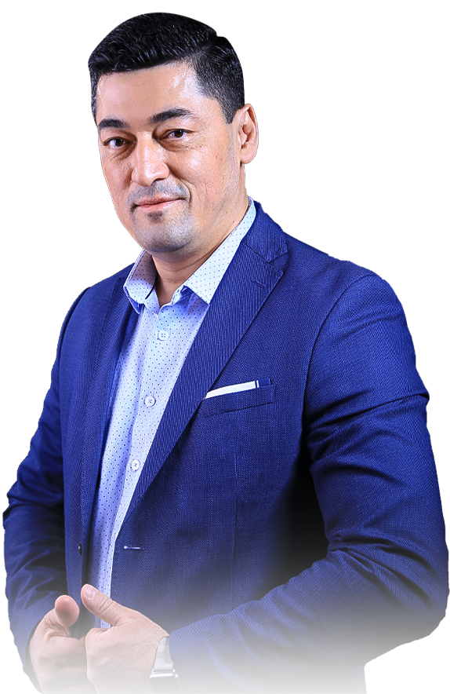

<section class="section" id="intro">
  <div class="container">
    
    <div class="section-content">
      <div class="main-content">
        <h4 class="title-with-circle">
          Бизнесни бошқариш сирлари
        </h4>
        <div class="secondary-title">
          <h4>Алишер Исаевдан тадбиркорлар учун икки ойлик бизнес-дастур</h4>
        </div>
        <div class="info">
          <p class="main-color">- Старт 27.02.2021 дан</p>
          <a href="#" class="btn-circle">РЎЙХАТДАН ЎТИШ</a>
        </div>
        <div class="person-name">
          <h3>Алишер Исаев</h3>
          <p class="main-color">Бизнесмен, маркетолог, инвестор</p>
        </div>
        <ul class="awards-list numbered-list">
          <li>
            <span>01</span>
            <p>
              Ўзбекистон Миллий банки – Корхоналарни молиявий тахлил қилиш
              методикасининг автори
            </p>
          </li>
          <li>
            <span>02</span>
            <p>Angel’s Food – асосчиси</p>
          </li>
          <li>
            <span>03</span>
            <p>
              Procter&Gamble – савдо менежери лавозимида “IV квартал 2002 йили
              Ўрта Осиё ва Кавказда энг баланд савдо кўрсатгичи учун” сертификат
              соҳиби
            </p>
          </li>
          <li>
            <span>04</span>
            <p>
              Интернет-провайдер TPS – тижорат директори лавозимида савдони
              400%га ошириб думалок интернет-карталар жорий этган
            </p>
          </li>
          <li>
            <span>05</span>
            <p>
              «Marwin Brands» корхонасида тижорат директори лавозимида “Dena”
              сокларини 2-чи ўриндан 1-чи ўринга олиб чиққан. Шу жумладан бозор
              улуши 14%дан 21%га ошган. Савдо хажми ўтган йилга нисбатан 183%
              ошган
            </p>
          </li>
          <li>
            <span>06</span>
            <p>
              ДП “Balton Trading (Asia)” (Nestle, Colgate-Palmolive, Heinz,
              Щедрое лето, Makfa, Impra, Oleina каби брендларнинг дистрибьютори)
              корхонаси рахбари лавозимида савдо хажмини 2014 йили 40%га оширди
            </p>
          </li>
          <li>
            <span>07</span>
            <p>
              2015 йили октябда «Marwin Brands» (соки “Dena) корхонасига Бош
              директор лавозимига қайтиб, кризисга қарамай, Тошкент шахар
              савдосини рекорд хажмга олиб чиққан
            </p>
          </li>
          <li>
            <span>08</span>
            <p>
              2017 йили август ойидан то бугунгача SAP Узбекистон корхонасида
              савдо менежери лавозимида ишлайди. Шу пайтда қуйидаги мижозлар SAP
              сотишга эришиглан: “Sam Antep Gilam” (SAG), Korzinka, GrandPharm,
              Infinbank, NBU, Kapitalbank, Promstroybank, AKFA ва хоказо
            </p>
          </li>
        </ul>
        <div class="founded-businesses">
          <h5>Қуйидаги бизнеслар асосчиси:</h5>
          <div class="inner-wrapper">
            <a href="#" class="img-wrapper">
              
            </a>
            <a href="#" class="img-wrapper">
              
            </a>
            <a href="#" class="img-wrapper">
              
            </a>
          </div>
        </div>
      </div>
      <div class="sticky-bar">
        <div class="img-wrapper">
          
          
        </div>
      </div>
    </div>
  </div>
</section>
